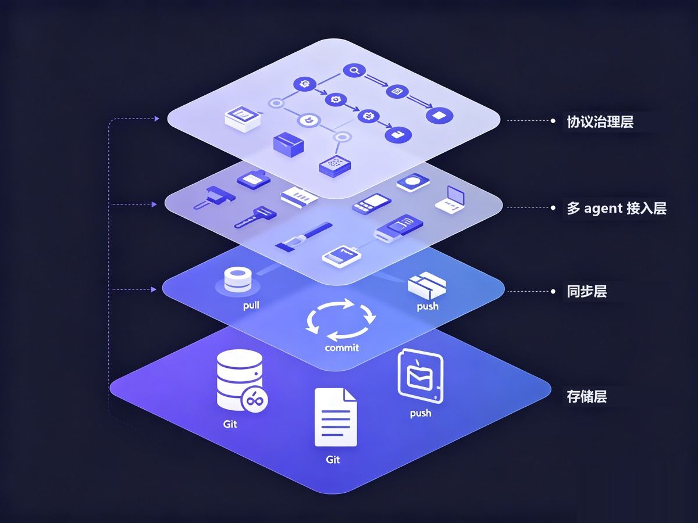

你大概经历过这个。笔记本上用 Claude Code 把项目交代清楚，换到台式机打开 Codex，它一无所知，你把规范、背景、踩过的坑重讲一遍。
更别说工具一直在换。几乎每个月都有个「当前最强」的模型，你从 Cursor 试到 Claude Code，又试 Codex、Gemini。有时候换不换还轮不到你，政策、地区、账号、价格，哪天你依赖的那个工具就用不了了。每换一次，agent 都停在「初次见面」。
nestwork 是冲这件事来的。一句话：它把你所有 agent 的记忆，变成一个你自己的 git 仓里的纯文本，让它们跨机器、跨工具、跨厂商共用同一个大脑。
它不是一个工具，不是托管服务，不需要服务器。它是一套协议。下面把它能做的事，一次讲清楚。

一、记忆就是 git 里的 markdown
nestwork 的底座简单到反直觉：所有记忆是一个 git 仓里的纯 markdown 文件，这个仓就是唯一真相源。agent 干活前 pull，写完 commit、push。没有数据库，没有后端，没有要注册的账号。
记忆是纯文本，意味着你随时能用任何编辑器、任何 git 工具打开看、改、回滚。它给人读，也给 agent 读。一条记忆怎么来的、什么时候改的，git log 里清清楚楚。
二、跨机器、跨厂商，共用一份记忆
因为同步走的是 git remote，你的笔记本、台式机、几台 Linux、甚至安卓上的 agent，只要能 push，就在同一个大脑里。不需要它们在同一台机器上，也不需要谁给谁开端口。
兼容的是一整类 agent：Claude Code、Codex CLI、Gemini CLI、Hermes、OpenClaw，以及其它 markdown 配置型的工具。同一份记忆，谁来都能读。
这正好接住了工具一直换的问题。记忆绑在某一个工具上，等于赌它永不被淘汰、永远能用。绑在 git 上的纯文本不挑工具：哪天你要从一个海外工具整体切到国产模型，上下文原样不动，换掉的只是读它的那个 agent。
三、一键继承，记忆长在你自己仓里
接入就是纯 git。在 GitHub 点 Use this template，你就继承了整套协议骨架，clone 下来就接上。
这里有个常被低估的点：你继承来的是一个你自己的 private 仓。记忆从第一天起就长在你手里，不是托管在某个服务商的后台。托管的记忆服务，你把上下文交出去，它就躺在别人的库里；nestwork 里，数据的归属权从头到尾没离开过你。
继承而不是 fork，还有个好处。上游更新协议时，更新脚本只碰协议层，碰不到你的私有记忆。你攒了几个月的策略、各 agent 的记忆，不会被一次上游同步冲掉。
四、私有，还能加密，敢把真东西写进去
记忆放 private 仓只是第一层。真正的机密，你还能再叠一层 git-crypt，在入库前就加密。就算仓库托管在 GitHub，它存到的也是密文。数据是你的，钥匙也是你的。
对要把项目内幕、内部踩坑、商业判断喂给 agent 的人来说，这不是锦上添花，是敢不敢用的前提。
五、真正难的是「一堆 agent 怎么不打架」
如果只是「拿 git 存 markdown」，那是个聪明的小技巧。nestwork 真正想清楚的，是多个 agent、跨多台机器同时干活时的那些脏活。
写隔离。每台机器、每个 agent 都只拥有、也只写自己的目录，路径长这样：agents/<主机名>/<agent-id>/。大家压根不写在同一个文件里，冲突无从谈起。万一真撞上，裁决规则写死：自己目录取本地，别人目录取远端，上游管理的公共层取远端。谁拥有谁说了算。
原子同步。在装了逐次写入钩子的工具上（目前是 Claude Code 和 Kimi Code），agent 每写一次自己的目录，写之前先 pull --rebase，写之后 commit、push，失败自动重试。竞态窗口被压到一次写入那一瞬，而不是整个会话敞着。没有这类钩子的工具，比如 Codex、Gemini，安装时会把协议写进它们的启动文件，由 agent 在会话结束时自己 commit、push 自己的目录。
分层与裁决。记忆是分优先级的：行为规则 > 策略 > 共享记忆 > 各 agent 私有 > 项目 > 方法论。两条指令冲突，认高优先级那条，不许把两个揉一起。正是这条链，让十几个 agent 行为一致，读的是同一本「宪法」。
蒸馏。各 agent 私有的零散观察，怎么沉淀成全员共享的事实？走一条蒸馏流程：先派子 agent 审查，查敏感信息、查事实错误、查矛盾、查过时，再交人确认，最后才并入共享记忆。共享记忆取的是并集而不是交集：重复的合并，只有一个 agent 观察到的也保留，各 agent 自己的私有记忆原样不动。scripts/maintenance/distill.py 可以直接生成这一步要用的提示词，也可以调用 Claude Code 或 Codex 把整个流程跑完。
agent 之间能留言。内置一个 git 原生的 mailbox。A 机器上的 agent 干完一段，给 B 机器的 agent 留一句「这块我改完了，你接着往下」，B 在协调相关任务时按需读取未读消息。没有消息队列、没有服务，就是往仓里写个文件 push 上去。
六、它是协议，所以管得更多
把它叫协议不是修辞。除了存和同步，它还规定了一整套「怎么用记忆」的规矩。
常驻启动，历史按需。启动时 agent 先 pull，然后只读三个很小的常驻文件：核心规则、一份简短的共享摘要、一份自己的简短摘要（两份摘要可选）。在有会话启动钩子的工具上，由钩子负责 pull 并把这些路径列给 agent。战略、历史记忆、项目、方法论和邮箱都按任务检索，摘要缺失也不会回退去读全部历史。常驻文件有字节预算，由 scripts/maintenance/check-resident.py 检查。
记忆该放哪，有明文规则。项目规范和教训进项目自己的文档，跨项目可复用的方法论进 workflow/，项目当前的进展状态进 projects/，只和这台机器有关的事实进 agent 自己的目录，跨 agent 的稳定事实进共享记忆。知识有固定落点，不会一团乱。
文件太大就拆。每个 markdown 文件都有行数上限，agent 写之前先检查；接近硬上限时，按主题拆成「索引加子文件」，保持每个文件聚焦，检索更准。协议 3.1 起，一个记忆范围还可以进一步启用主题记忆：事实存在各个主题文件里，文件头写明什么时候该读它，memory.md 变成由 scripts/maintenance/memory-index.py 生成的索引，agent 先读索引，只打开用得上的主题。
版本治理。协议用 MAJOR.MINOR 标记演进：MAJOR 升级可能需要你这边配合调整，MINOR 升级只做增量兼容。会话启动钩子发现上游有新版本时会提醒你，但不会自动应用任何东西。私有实例还能用自己的 queen/limits.md 覆盖默认的行数上限。它像一份会迭代的规范，不是一个静态软件。
七、还有这些（可选，用得上再开）
- 在 Claude Code 里用 claude-mem 的话，nestwork 会在会话结束时把它的观察导出、随记忆一起 push，让它的笔记也获得跨机能力。
- 本地工具历史这种高频、体积大的产物，走每个 agent 单独的孤儿分支存，主分支保持精简。这一项默认关闭，目前也建议保持关闭：就算放在单独分支上，仓库整体还是会越来越大。
- 从一个外部工作目录往 nestwork 吸收内容时，由该目录里的
nestwork.config.json约定脱敏规则，而且吸收永远是手动触发，机密不会裸奔着被搬进来。
上手
去 GitHub：songth1ef/nestwork。觉得有用，先 star 一下。
# 1. 在 GitHub 点 Use this template，建你自己的私有仓
# 2. clone 下来
# 3. 给你用的每个工具各跑一次安装
bash scripts/install/claude.sh
bash scripts/install/codex.sh
bash scripts/install/gemini.sh装完之后，Claude Code 每次写记忆都会自动同步，Codex 和 Gemini 则按安装时写入的指令，在每次会话结束时 commit、push 自己的记忆。你照常用 agent，只不过这次，换台机器、换个工具、换个模型，它都记得住。
先在两台设备、两个工具上试一周。等哪天你换了机器，或者从一个工具切到另一个，打开 agent 发现它张口就接上了昨天的活，你就懂这套东西的价值了。
给你的 agent 一份记忆
nestwork 把一个私有 git 仓库变成 Claude Code、Codex、Gemini、Kimi 等 agent 共享的长期记忆。
用模板创建我的记忆仓库 → ★ 去 GitHub 点个 Star